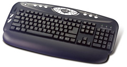

Teclado Logitech 610
Acess 600 Keyboard USB Preto
Disponibilidade: Em estoque
Marca: Genius - www.geniusnet.com
Modelo: 610-001150
Referência: 01150
De: R$ 65,00
Por: R$ 50,00
|
 |
|
Trabalhe confortavelmente com controles de inicialização práticos, teclas de aceleração de multimídia,
controle de volume com a ponta dos dedos e teclado com teclas macias.
Botões de acesso de um único toque: Inicie imediatamente o mecanismo de pesquisa na Internet, e-mail,
aplicativo de VoIP ou a calculadora na tela.
Teclas de função otimizadas: Programe facilmente suas teclas F para abrir aplicativos, arquivos ou pastas.
Resistente a derrames: Proteja o teclado contra borrifos ou derramamentos acidentais.
|
|